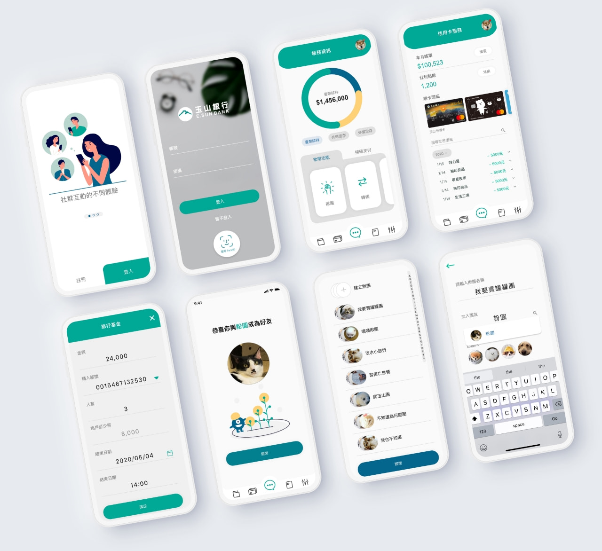
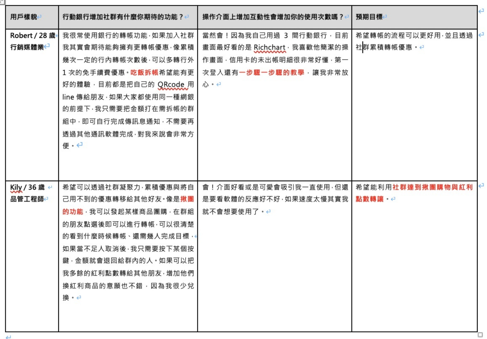
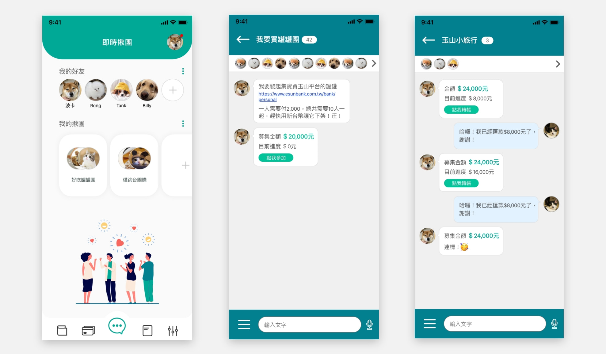

KUO YEN-HONG
UI/UX designer | Front-end engineer


-
行動銀行功能提案
 行動銀行功能提案畫面行動銀行的新功能發想提案，當時的目標是希望銀行的 App 能夠完成群眾募資或聚餐自動拆帳的功能。透過 Persona 調查使用者對於團購與拆帳的需求，發現如果是親朋好友要一起募集金額購買商品，因為彼此都是熟識的對象，比較不會有跑單或是有人取消的情況，但如果是不太熟的朋友或是透過社群一起集資成團，就會遇到像有人沒有付款、轉帳紀錄不好搜尋、剩下多少進度需要湊足金額成團等等的問題。
-Persona
在快速做人物誌的訪查時，詢問約10位親朋好友，對於團購與拆帳在銀行 App 內的想像為何？大概分類出以下幾項： 當時整理的部分Persona- 功能類：
- 吃飯拆帳好需要
- 希望社群內可發起揪團
- 群組能夠導入遊戲機制，獲勝者拿獎品
- 群內可以先累積一筆公基金
- 優惠類：
- 透過揪團免收取換匯手續費
- 累積轉帳的手續費減免次數
- 可以獲得現金回饋或刷卡金
- 互動性：
- 操作要更加流暢
- 步驟流程教學
- 投票功能設置
- 每日登入即可以享優惠
針對以上列出的需求，大致可以整理需要有團購跟拆帳的功能，多使用這樣的功能能夠產生出更多優惠，操作時需要有互動式或是步驟教學引導使用者去完成功能操作。
 提案之團購流程
提案之團購流程
群眾募資也是近年來新興的網路行為，利用彼此對某商品有興趣，進而組團將金額滿足團購優惠價格，眾人皆可以享有折扣的優惠福利，但是對於團購發起人卻有金額對帳不易、手動製作匯款表單、溝通管道散落的使用不便問題，透過這個功能可以將顧客引導到同一銀行 App 下操作，而且不用擔心金流或詐騙問題，也能夠提升顧客黏著度。
 團購流程畫面原本專案皆使用Sketch 作為 App Design 與 Pototype 的主要工具，在此專案開始轉換成 Adobe XD ，因為能夠線上一起協作，同步標註修改項目與進度，並可以產生獨立網址，讓開發人員對照間距與色號。也因為本提案開始採用 Adobe XD ，往後跟專案團隊溝通皆使用協作標註功能，在線上就能確認彼此進度，加速整體專案的開發進度。
- 負責發想提案，從 Persona 到產出 Pototype。
- 同時訓練自己使用不同軟體進行設計，增加自己對於軟體的掌握程度。
{kind=link}
{kind=link}
{kind=link}